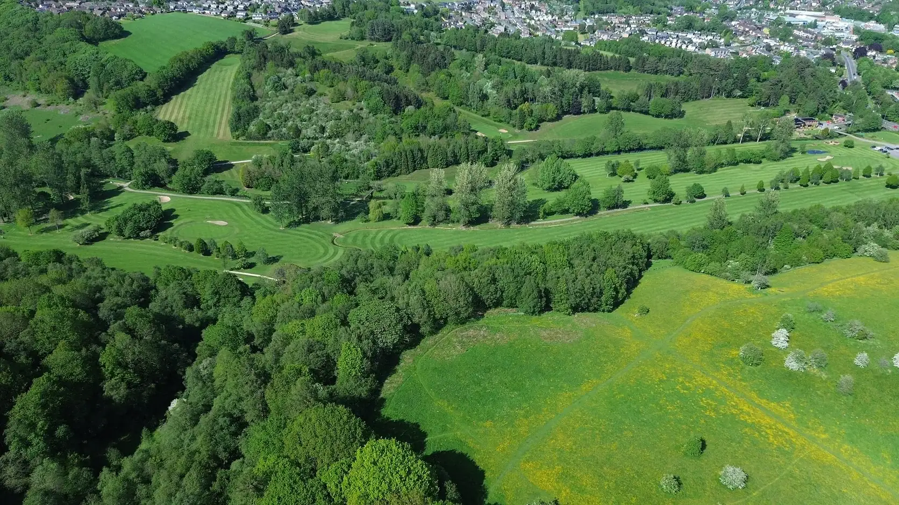

2026년 1월 1일 시행된 개정 지방세법은 회원제 골프장을 매매로 넘겨받는 승계 취득에도 신설이나 증설과 같은 취득세 12% 중과세율을 적용합니다. 종전에는 새로 짓는 경우에만 중과가 붙고 기존 골프장을 인수할 때는 일반세율 4%였습니다. 정부는 고급주택 같은 사치성 재산과의 과세 형평을 이유로 들었습니다. 그 결과 상반기 회원제 골프장 M&A 시장은 사실상 멈췄습니다.

핵심 데이터 한눈에
거래대금보다 세금이 크게 잡히는 구조
회원제 골프장 거래에는 다른 부동산과 다른 특수성이 있습니다. 골프장의 장부상 가치 대부분이 회원에게 돌려줘야 할 입회금, 즉 회원권 부채입니다. 인수자는 이 부채를 떠안는 대신 매도인에게는 그 차액만 현금으로 지급합니다. 그런데 취득세는 부채를 포함한 전체 거래 규모에 부과됩니다. 그래서 실제 오가는 돈은 수백억인데 과세 표준은 수천억이 되는 일이 생깁니다. 채수용 씨유레저 대표는 이 구조 때문에 세율이 세 배가 되면 인수자가 느끼는 부담은 그보다 훨씬 크다고 설명했습니다.
한국경제가 짚은 포스코 잭니클라우스GC 사례가 이를 잘 보여 줍니다.
매도인이 손에 쥐는 돈이 700억인데 인수자가 내는 세금이 360억이면, 인수자 입장에서 거래 비용은 매각대금의 절반이 넘습니다. 투자은행 관계자의 말대로 "세금도 인수자에게는 거래 비용이라 가격 눈높이가 평행선을 달리거나 구조가 도저히 안 나오는" 상태가 됩니다. 매도인이 가격을 낮추면 현금 유입 효과가 줄어 매각의 목적이 사라지고, 가격을 유지하면 매수자가 없습니다.
매물은 쌓이는데 사는 사람이 없다
시장에는 매물이 적지 않습니다. 클럽디 더플레이어스, 감곡CC, 골프존카운티 영암45 같은 대중제 골프장은 공식 매각 절차를 밟고 있습니다. 회원제 쪽에서는 포스코 잭니클라우스GC, 코오롱 우정힐스CC, 웅진 렉스필드CC 등이 잠재 매물로 거론됩니다. 재무구조 개선을 위해 골프장을 팔려는 기업이 늘고 있다는 뜻입니다. 애경그룹이 중부CC를 더시에나클럽에 매각한 것처럼 그룹 차원의 자산 정리 수요는 앞으로도 이어질 가능성이 큽니다.
그런데 회원제 매물만 거래가 안 됩니다. 세제만 문제가 아닙니다. 회원제 골프장의 2025년 이용객은 1,530만 명으로 전년보다 4.8% 줄었습니다. 같은 기간 대중제는 0.8% 감소에 그쳤습니다. 인수자가 보기에 회원제는 세금은 세 배로 뛰었는데 영업은 대중제보다 빠르게 나빠지는 자산입니다. 입회금 반환 의무까지 안고 가야 합니다. 채 대표는 인수자 입장에서 사지 않을 이유가 세 개나 겹친 상태라고 짚었습니다.
회원제 골프장 앞에 놓인 세 갈래 길
그대로 버틴다
매각을 미루고 운영으로 버티는 선택입니다. 그러나 이용객 감소와 입회금 반환 압력이 동시에 오는 회원제 구조에서 시간은 매도인 편이 아닙니다.
대중제로 전환한다
회원제를 해지하고 대중제로 바꾸면 승계 취득 중과 대상에서 벗어나고 세제 부담도 줍니다. 다만 입회금 반환 재원과 회원 동의가 필요합니다.
대중제와 숙박을 묶어 회원을 다시 모집한다
골프장은 대중제로 두고, 콘도나 리조트 숙박과 결합한 이용권 형태로 회원을 모집하는 방식입니다. 세제 부담을 피하면서 회원제가 주던 소속감과 부킹 우선 혜택을 다른 방식으로 제공합니다.
세 번째 길이 최근 신규 개발 사업장에서 표준이 되어 가는 이유는 단순합니다. 회원제 골프장을 새로 만들거나 인수하는 데 12% 취득세가 붙는 세상에서, 골프장은 대중제로 운영하고 콘도 회원권이나 이용권으로 고객을 묶는 구조가 세금과 규제 양쪽에서 가장 가볍습니다. 이용자 입장에서도 골프만 치는 회원권보다 가족이 함께 머무는 숙박이 붙은 상품의 이용 가치가 높습니다. 회원제 골프장의 출구가 막힌 자리에 대중제 골프장과 숙박을 결합한 모델이 들어서는 흐름은 이번 세제 개편으로 더 빨라질 것입니다.
회원제의 가치를 다른 그릇에 담는 일
채 대표는 이번 개정이 회원제라는 상품의 종말이 아니라 회원제가 주던 가치를 다른 그릇에 담아야 하는 시점이라고 봅니다. 회원이 회원제에서 얻고자 한 것은 예약의 확실성, 함께 치는 사람들에 대한 소속감, 그리고 이용을 그만둘 때의 출구였습니다. 이 세 가지를 대중제 골프장과 숙박 시설의 결합 상품 안에서 어떻게 설계하느냐가 앞으로 2~3년 신규 사업장의 분양 성패를 가른다는 것이 채 대표의 판단입니다.
실제로 씨유레저가 최근 참여하는 사업장은 대부분 이 구조입니다. 골프장은 대중제로 운영하되 콘도 회원 또는 주중 이용권 보유자에게 예약 우선과 우대 요금을 제공하고, 숙박과 골프를 한 상품으로 묶습니다. 회원제 골프장을 통째로 사는 데 필요한 자본과 세금 없이도 회원제에 가까운 고객 경험을 만들 수 있다는 점이 시행사와 운영사 모두에게 매력입니다.
채수용 대표는 취득세 12%가 회원제 골프장의 가격을 떨어뜨리는 것이 아니라 거래 자체를 없애는 세제라고 봅니다. 거래가 없는 자산은 가치 평가도 멈춥니다. 그래서 신규 사업을 준비하는 시행사라면 회원제 인수를 검토하는 대신, 처음부터 대중제 골프장과 숙박을 결합한 회원모집 구조를 설계하는 것이 자본 효율과 분양 속도 모두에서 낫다는 것이 씨유레저의 판단입니다.
채수용, ㈜씨유레저 대표이사세제는 시장의 방향을 바꾸지 않습니다. 이미 가고 있던 방향을 빠르게 만들 뿐입니다. 회원제에서 대중제 결합 모델로 옮겨 가던 흐름은 이번 개정으로 몇 년 앞당겨졌습니다.
대중제 골프장과 숙박 시설을 결합한 회원모집 구조를 검토 중이시라면 (주)씨유레저로 문의 가능합니다.